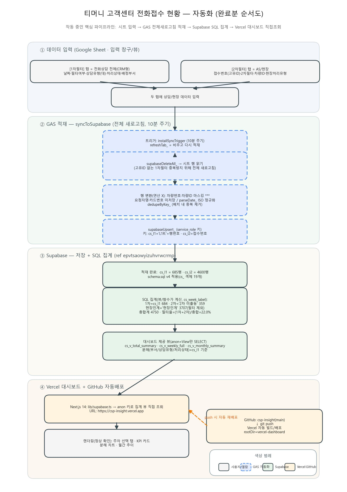

티머니 고객센터의 전화접수·필터링 현황을 구글시트 입력만으로 자동 집계하고, 주차·월 단위 통계를 웹 대시보드에서 실시간으로 확인하는 사내 도구입니다.
고객센터의 전화접수 현황은 "얼마나 들어와서, 얼마나 현장으로 넘어갔는지(필터링율)"가 핵심 지표입니다. 문제는 이 숫자를 매주 사람이 엑셀을 열어 손으로 집계했다는 점입니다.
1차필터·2차필터 탭을 매주 열어 행을 세고, 현장인계 건을 빼고, 필터링율을 계산하는 과정을 손으로 반복했습니다.
전화상담 전체(1차필터)와 AS·현장(2차필터)이 서로 다른 탭·기준으로 존재해, 한눈에 보는 통계가 없었습니다.
원본에는 요청자명·카드번호·차량번호 등 민감정보가 섞여 있어, 그대로 공유·집계하기 어려웠습니다.
단순히 시트를 DB로 옮기는 것을 넘어, 데이터를 신뢰할 수 있게 만드는 과정에 난관이 있었습니다.
전화상담(1차필터)에는 접수번호 같은 고유 ID가 없어, 행번호 키로 적재하면 정렬·중간삽입 때 같은 건이 중복(684 → 868건)으로 늘어났습니다.
접수일시가 yyyymmddHHmmss 같은 8·12·14자리 패킹 숫자로 들어와, 주차·월 집계를 하려면
먼저 표준 날짜(ISO)로 정규화해야 했습니다.
차량번호·차량ID는 ***로 마스킹하고 요청자명·카드번호·자유텍스트는 아예 저장하지 않도록,
적재 단계에서 걸러야 했습니다.
"현장인계 건은 필터 집계에서 제외" 같은 규칙을 매번 손으로 적용하면 사람마다 숫자가 달라져, 규칙을 SQL에 고정할 필요가 있었습니다.
시트 입력 → GAS 적재 → Supabase 집계 → Vercel 대시보드. 사람의 손은 맨 앞 한 번뿐입니다.
상담사가 1차필터(전화상담 전체)·2차필터(AS/현장) 탭에 평소처럼 데이터를 입력합니다.
installSyncTrigger가 10분마다 실행 → DB를 비우고 시트를 다시 적재. 적재 중 차량번호·차량ID 마스킹,
날짜 ISO 정규화, 배치 내 중복 제거를 수행합니다.
뷰·함수(cs_week_label)가 일/주/월 단위로 자동 계산. "현장인계 제외" 같은 규칙이 SQL에 고정돼
누가 보든 같은 숫자가 나옵니다.
Next.js 웹앱이 anon 키로 집계 뷰만 읽어, KPI·분해 차트·월간 추이를 실시간으로 보여줍니다.
입력부터 대시보드까지, 현재 작동 중인 핵심 파이프라인 전체 구조입니다.

일·주·월 탭을 전환하며 총합계·필터율과 부서/유형/상태별 분해를 바로 확인합니다.
반복 수작업을 없애고, 누가 보든 같은 신뢰할 수 있는 숫자를 실시간으로 제공합니다.
매주 반복하던 수기 집계가 사라지고, 시트 입력 후 10분이면 대시보드에 자동 반영됩니다.
"현장인계 제외", 주차 기준(목~수) 같은 규칙을 SQL에 고정해 사람·시점이 달라도 같은 숫자가 나옵니다.
주차·월 단위 필터링율과 부서/유형/상태별 분해를 웹에서 즉시 확인해 의사결정이 빨라집니다.
차량번호·차량ID는 마스킹, 요청자명·카드번호는 미저장. 읽기는 anon 키로 집계 뷰만 노출합니다.